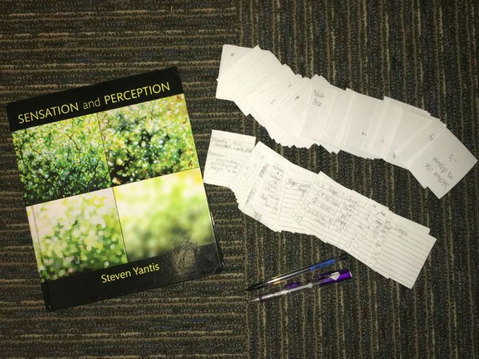
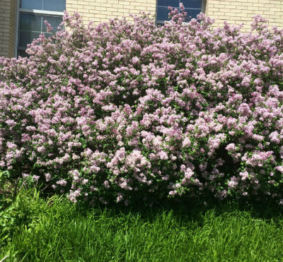

WashU Academics
WashU can offer lots of academic assistance in many ways. Find the one thats right for you by lookings into WashU Academic Help . Select a help type of helper, and learn where to go to get help from that person
WashU Extracurricular

WashU has tons of ways to get involved, no matter who you are or what your interests are. Go ahead and click WashU Extracurricular to browse through sports, arts, and more.
Outside WashU
Everyone needs to get off campus at some point. St. Louis is a city with lots of things to do! To explore options for days outside the WashU bubble, click Outside WashU to explore the city.